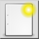
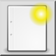
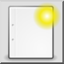
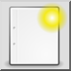

Nova
Orodna vrstica / ikona:
 

Meni: Datoteka > Nova
Bližnjice: Ctrl+N (Mac: ⌘N) | Ctrl+T (Mac: ⌘T)
Ukazi: new
Orodna vrstica / ikona:
 

Meni: Datoteka > Nova
Bližnjice: Ctrl+N (Mac: ⌘N) | Ctrl+T (Mac: ⌘T)
Ukazi: new
S tem orodjem lahko ustvarite nove risbe. Nove risbe ne vsebujejo nobenih objektov, plasti ali blokov.
V kolikor veliko uporabljate QCAD, si lahko ustvarite predloge risb, ki že vsebujejo okvirje, definicije plasti ali bloke.
Za pričetek risanja odprite tako predlogo kot, da pričnete iz prazne risbe.
Več o tem lahko preberete v dokumentaciji orodja
Nova iz predloge.